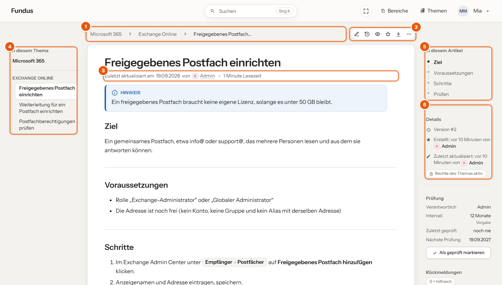
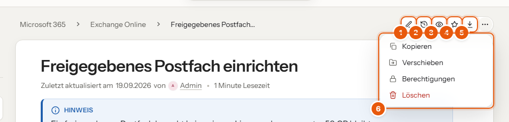
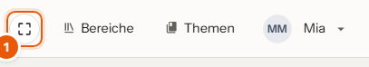
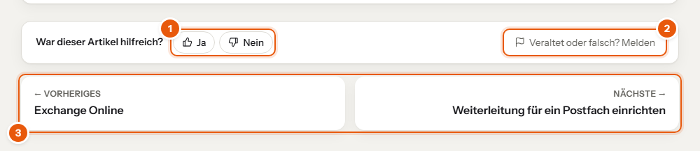

Jeder Artikel ist gleich aufgebaut. Wenn du die Bereiche einmal kennst, findest du dich in jedem Artikel sofort zurecht.
Aufbau eines Artikels

- Pfad: wo der Artikel steht, zum Beispiel „Themen › Microsoft 365 › Artikel“. Jeder Teil ist anklickbar.
- Aktionsleiste: Bearbeiten und weitere Aktionen, siehe unten.
- Stand: wann und von wem der Artikel zuletzt geändert wurde, und die Lesezeit.
- In diesem Thema: alle Artikel des Themas, nach Abschnitten gruppiert. Der aktuelle ist hervorgehoben.
- In diesem Artikel: die Überschriften. Ein Klick springt dorthin, beim Scrollen wandert die Markierung mit.
- Details: Version, wer den Artikel angelegt und geändert hat, und ob eigene Rechte gelten.
Steht unter dem Titel „Über 6 Monate nicht aktualisiert“, prüf die Angaben besonders genau und melde, was nicht mehr stimmt.
Die Aktionsleiste

- Bearbeiten: öffnet den Editor. Fehlt der Knopf, darfst du hier nicht schreiben.
- Versionen: alle früheren Fassungen des Artikels.
- Beobachten: Du bekommst eine E-Mail, wenn jemand den Artikel ändert oder kommentiert.
- Favorit: merkt den Artikel für deine Startseite.
- Exportieren: als PDF, Text oder HTML-Datei.
- Weitere Aktionen hinter ⋯: Kopieren, Verschieben, Berechtigungen und Löschen, soweit du sie darfst.
Fährst du mit der Maus über ein Symbol, steht sein Name da.
Mehr Platz zum Lesen

Der runde Knopf (1) neben „Bereiche“ schaltet den Zen-Modus ein: Alles wird weiß, übrig bleiben nur der Artikel, der Pfad darüber und „Vorheriger/Nächster Artikel“. Kopfleiste, Seitenleisten, Knöpfe und Fundus sind so lange weg. Zurück kommst du mit Esc oder einem Klick auf „Esc“ oben rechts. Das Wiki merkt sich deine Wahl, auch beim Weiterblättern.
Bilder und Befehle
- Bilder vergrößerst du mit einem Klick; mit Esc geht es zurück.
- Befehle stehen in dunklen Codekästen, oben steht die Sprache. Der Knopf rechts in dieser Kopfzeile kopiert den ganzen Befehl, so schleichen sich keine Tippfehler ein.
Rückmeldung geben

- War dieser Artikel hilfreich? Ein Klick auf Ja oder Nein reicht.
- Veraltet oder falsch? Melden: Wähle, was nicht stimmt, wo im Artikel, und beschreib es kurz. Die Person, die den Artikel pflegt, sieht deinen Hinweis.
- Vorheriger und nächster Artikel im selben Thema.
Weitergeben
Schick Kollegen am besten den Link aus der Adressleiste. Geht es um einen bestimmten Abschnitt, fahr mit der Maus über dessen Überschrift und klick auf das Link-Symbol dahinter: Der Direktlink zu genau dieser Stelle liegt dann in der Zwischenablage.
Für Kunden oder zum Ausdrucken gibt es in der Aktionsleiste Exportieren → PDF-Datei.
Ein PDF ist eine Momentaufnahme und veraltet, sobald jemand den Artikel ändert. Intern immer den Link verwenden.